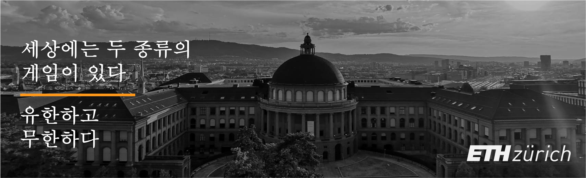
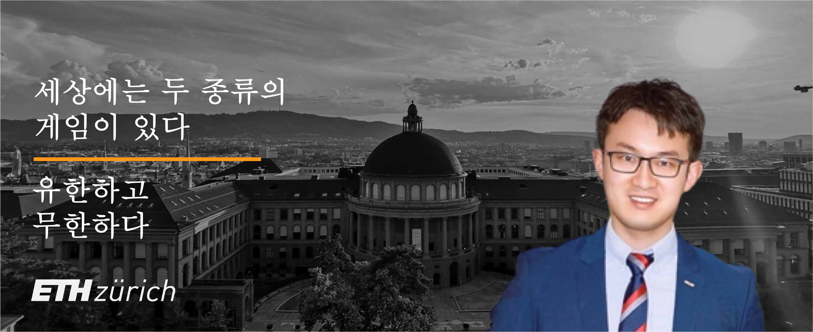

안녕하세요!
안녕하세요!

현재 홍쉬 박사 독일 뮌헨에 소재한 자동차 산업의 상업용 연료 전지 차량의 개발 엔지니어로 일하고 있습니다. 그의 학계 및 산업 분야 간 관심 분야는 재생 에너지, 지속 가능성, 기능성 재료 및 주식 연구입니다.
2021년 취히히 연방 공과대학교에서 탄소중립기술 연구로 박사학위를 받았고, 자동차 수소연료전지 연구개발을 위해 산업 2년, 학술 4년 협력 프로젝트에 참여했다. 2016년에 그는 독일 회사에서 산업 실무를 수행하고 프랑스 연구소에서 교육을 받아 뮌헨 공과 대학에서 재료 과학 분야의 유럽 이중 석사 학위를, 렌 1 대학에서 물리학 석사 학위를 취득했습니다. 16세의 어린 나이에 대학에 진학하여 2013년 3건의 특허를 취득하며 북경운수대학교에서 학사과정을 마쳤습니다. 학술연구와 병행하여 Quantic에서 파트타임 MBA 펠로우로 전문교육을 발전시켰습니다. 중국 벤처 캐피탈 및 증권 회사에서 인턴십을 한 경영대학원.
PEK (Nǐ Hǎo) -> CDG (Bonjour) -> HAM (Moin Moin) -> MUC (Servus) -> ZRH (Grüezi) -> ?
교육
- 2017-2021 | 재생 에너지 박사 학위 (전체 자금 지원)
취리히 연방 공과대학교, 스위스 - 2014-2016 | 석사, 재료 및 물리학 (EU 복수 학위)
뮌헨 공과대학교, 독일
렌 1 대학, 프랑스
- 2009-2013 | 학사, 재료 화학(특허 부여)
베이징 교통 대학, 중국
____
- 2020-2021 | MBA, 경영학 (시간제)
퀀틱 비즈니스 스쿨, 워싱턴 D.C.
연구 관심사
- 재생 에너지, ESG 및 지속 가능성, 운송 탈탄소화
- 기능성 재료, 특성화, 수명 주기 평가
- 전산 이미징, X선 기술, 이미지 처리
- 주식 리서치, 빅 데이터 분석, 비즈니스 분석
학업 서비스
- 동료 검토자:
- 저널 오브 파워 소스 (IF=9.13, 2022)
- 국제 수소 에너지 저널 (IF=7.14, 2021)
- 지속 가능한 발전을 위한 에너지 (IF=5.76, 2021)
- 조교:
- 재생 에너지 기술 II(석사 과정, 취리히 연방 공과대학교, 2017-2019)
- 조직:
- 전기화학학회 초청논문/수상비자 (2019, USA)
- 국제전기화학학회 회원 (2019, IT)
- 독일 물리학회 회원 (2016, DE)
간행물
-
H. Xu* [PSI], M. Bührer, F. Marone, Prof. T. J. Schmidt, F. N. Büchi, J. Eller
Effects of gas diffusion layer substrates on PEFC water management: Part II. In situ liquid water desaturation via evaporation [J]
2022 | J. Electrochem. Soc. [PDF][SLS] [EPFL] [새로운!] -
S. van Rooij, M. Magnini, A. Mularczyk, H. Xu* [PSI], F. N. Büchi [PSI], Prof. S. Haussener [EPFL]
Conductive heat transfer in partially saturated gas diffusion layers with evaporative cooling [J]
2022 | J. Electrochem. Soc. [PDF][SLS] [EPFL] -
H. Xu* [PSI], S. Nagashima [Toyota], H. Nguyen, K. Kishita, F. Marone, F. N. Büchi, J. Eller [PSI]
Temperature dependent water transport mechanism in PEFC gas diffusion layers revealed by subsecond operando X-ray tomographic microscopy. [J]
2021 | J. Power Sources [PDF][SLS] [Toyota] -
M. Bührer, H. Xu* [PSI], A. Hendriksend, F. N. Büchi, J. Eller, Prof. M. Stampanoni [ETH], F. Marone
Deep learning based classification of dynamic processes in time-resolved XTM [J]
2021 | Scientific Reports [PDF][SLS] [CWI 암스테르담] -
H. Xu* [PSI], M. Bührer, F. Marone, Prof. T. J. Schmidt [ETH], F. N. Büchi, J. Eller [PSI]
Effects of gas diffusion layer substrates on PEFC water management: Part I. Operando liquid water saturation and gas diffusion properties [J]
2021 | J. Electrochem. Soc. [PDF][SLS] -
M. Bührer, H. Xu* [PSI], J. Eller, J. Sijbers, Prof. M. Stampanoni [ETH], F. Marone [SLS]
Unveiling water dynamics in fuel cells from time-resolved tomographic microscopy data [J]
2021 | Scientific Reports [PDF][SLS] [앤트워프 대학교] -
C. Csoklich, H. Xu* [PSI], F. Marone, Prof. T. J. Schmidt [ETH], F. N. Büchi [PSI]
Laser Structured Gas Diffusion Layers for Improved Water Transport and Fuel Cell Performance [J]
2021 | ACS Appl. Energy Mater. [Link][SLS] -
H. Xu* [PSI], M. Bührer, F. Marone, Prof. T. J. Schmidt [ETH], F. N. Büchi, J. Eller [PSI]
Optimal image denoising for operando XTM of liquid water in PEFC gas diffusion layers. [J]
2020 | J. Electrochem. Soc. [PDF][SLS] -
H. Xu* [PSI], F. Marone, S. Nagashima [Toyota], H. Nguyen, K. Kishita, F. N. Büchi, J. Eller [PSI]
(Invited) Exploring sub-second and sub-micron XTM imaging of liquid water in PEFC GDLs.[J]
2019 | ECS Transactions [PDF][SLS] [Toyota] [ECS 여행 보조금] -
Y. Nagai [Toyota], J. Eller, T. Hatanaka, S. Yamaguchi, S. Kato, A. Kato, F. Marone, H. Xu* [PSI], F. N. Büchi.
Improving water management in fuel cells through microporous layer modifications: Fast operando tomographic imaging of liquid water. [J]
2019 | J. Power Sources [Link][SLS] [도요타] -
H. Xu* [PSI], M. Bührer, F. Marone, Prof. T. J. Schmidt [ETH], F. N. Büchi, J. Eller [PSI]
Fighting the noise: towards the limits of subsecond X-ray tomographic microscopy of PEFC. [J]
2017 | ECS Transactions [Link][SLS] [ModVal 포스터상] -
Prof. H. Zhang, R. Wu, H. Xu* [BJTU], F. Li, S. Wang, J. Wang [BJUT], T. Zhang
A simple spray reaction synthesis and characterization of hierarchically porous SnO2 microspheres for an enhanced dye sensitized solar cell. [J]
2017 | RSC Advances [Link][BJTU] -
Prof. H. Zhang [BJTU], H. Xu* [BJTU], J. Wan, Prof. L. Yan, C. Dai
Preparations of new porous oxides spherical powders by spray reaction technique.[J]
2012 | Vacuum & Cryogenics [Link (CN)][BJTU] -
X. Qi, H. Xu* [BJTU], X. Zhou
Degradation of highly active cypermethrin via ultrasonic irradiation combined with TiO2 photocatalysis.[J]
2012 | Chem. Res. [Link (CN)][BJTU]
특허
-
Annular gas-liquid interface jigging magnetic separation device [P]
발명가: Prof. M. Fu, Prof. H. Zhang, H. Xu (BJTU), Prof. L. Yan
중국 특허 번호: CN102441489B, Oct 11, 2013. [Grant] -
Continuously operating annular gas-liquid interface jigging magnetic separation device [P]
발명가: Prof. H. Zhang, H. Xu (BJTU), Prof. M. Fu, Prof. L. Yan
중국 특허 번호: CN102441490A, Nov 1, 2013. [Grant] -
Ultrasonic-photocatalytic oxidation coupled fruit and vegetable cleaning device [P]
발명가: X. Zhou, H. Xu (BJTU), Prof. H. Jiang, X. Qi
중국 특허 번호: CN202311136U, May 9, 2012. [Grant]
논문
-
H. Xu [ETH], Prof. T. J. Schmidt (examiner), Prof. M. Stampanoni (co-examiner), Dr. J. Eller (advisor)
Subsecond Operando X-ray Tomographic Microscopy of Liquid Water in Polymer Electrolyte Fuel Cells [D]
박사 논문. 과학 박사. 취리히 연방 공과대학교, 스위스 취리히, 2021년. [PDF] -
H. Xu [TUM], Prof. P. Müller-Buschbaum (examiner), Prof. W. Schmahl (co-examiner), Dr. E. Metwalli
Structure & Properties of Thermoresponsive DBC Embedded with Metal Oxide Nanoparticles. [D]
석사 논문. 과학의 마스터. 뮌헨 대학교 및 뮌헨 공과 대학교, 독일 뮌헨, 2016년. [PDF] -
H. Xu [BJTU], Prof. H. Zhang (examiner)
Application of Mesoporous SnO2 Materials in Dye-sensitized Solar Cells and Lithium Batteries. [D]
학사 학위 논문. 과학 학사. 베이징 교통 대학, 베이징, 중국, 2013년. [PDF]
조교 · 조교
-
재생 에너지 기술 II, 에너지 저장 및 변환
취리히 연방 공과대학교, 석사 과정 (529-0191-01L)
2017-2019 | 봄 학기 [Link]
컨퍼런스
-
H. Xu [PSI], M. Bührer, F. Marone, T. J. Schmidt, F. N. Büchi, J. Eller
Influence of Pore Size Distribution on Operando GDL Liquid Saturation.
236th Electrochemical Society Meeting (ECS), Atlanta, USA. 2019. [Oral] [Link] -
H. Xu [PSI], M. Bührer, F. Marone, T. J. Schmidt, F N. Büchi, J. Eller
Advancements in 10Hz operando X-ray Tomographic Imaging of Water in GDLs of PEFC.
8th Int. Conference on Fundamentals & Devel. of Fuel Cells (FDFC), Nantes, France. 2018. [Oral] [Link] -
H. Xu [PSI], M. Bührer, F. Marone, T. J. Schmidt, F N. Büchi, J. Eller
Studies of Water Distribution in the Gas Diffusion Layer of PEFCs using X-ray Tomographic Microscopy
69th Annual Meeting of the Int. Society of Electrochemistry (ISE), Bologna, Italy. 2018. [Poster] [Link] -
H. Xu [PSI], M. Bührer, F. Marone, T. J. Schmidt, F N. Büchi, J. Eller
Water Distribution in the Gas Diffusion Layer of PEFCs: X-ray Tomographic Microscopy Studies
15th Symposium on Modeling & Exp. Validation (ModVal), Aarau, Switzerland. 2018. [Poster Prize] [Link] -
H. Xu [PSI], M. Bührer, F. Marone, T. J. Schmidt, F. N. Büchi, J. Eller
Quantification of Feature Detectability for Subsecond X-ray Tomographic Microscopy of PEFC.
21st European Fuel Cell & Electrolyser Forum (EFCF), Luzern, Switzerland. 2017. [Oral][Link] -
H. Xu [PSI], M. Bührer, F. Marone, T. J. Schmidt, F. N. Büchi, J. Eller
Contrast-to-Noise Ratio Evaluation for X-ray Computed Tomographic Imaging of Water in Polymer Electrolyte Fuel Cells
14th Symposium on Modeling & Exp. Validation (ModVal), Karlsruhe, Germany. 2017. [Poster][Link] -
H. Xu [TUM], E. Metwalli, P. Müller-Buschbaum
Nanoparticles Embeded Thermoresponsive Diblock Copolymers for Magnetic Sensor Application.
2016 Erasmus MaMaSELF Program Status Meeting, Rigi Kulm, Switzerland. 2016. [Oral] [Link] -
H. Xu [TUM], E. Metwalli, P. Müller-Buschbaum
Magnetic properties and structure of thermoresponsive polystyrene-block-poly(N-isopropylacrylamide)/iron oxide nanocomposite thin films.
80th Annual Meeting of German Physical Society (DPG), Regensburg, Germany. 2016. [Poster] [Link] -
H. Xu [BJTU], Prof. H. Zhang, R. Wu
Mesoporous SnO2Microspheres: Synthesis, Characterization, and Application in Enhanced Dye-sensitized Solar Cells and Lithium Batteries.
2013 Energy Particles Frontier Seminar at Tsinghua University, Beijing, China. 2013. [Poster] [Link]
토크 및 사회자
-
2022 | IN3 Capital Salon Invited Speaker: What is the best thing about "hydrogen energy"? (Session 8 / 100+ online participants)
-
2022 | MiraclePlus Insider Sharing: New Energy Opportunities and Challenges under Carbon Neutral Vision - Technology Frontiers, Policies and Investment Opportunities (50+ online participants)
-
2022 | Dr. Transformer Roundtable Moderator: IC/Chip/Semiconductor/Frontier - Online Roundtable for Domestic and International PhD Students (100+ online participants)
-
2021 | Clubhouse Moderator: PhD Vision in the Energy Crisis - Focus on New Energy Policies/Technologies by Countries (Light/Wind/Lithium/Hydrogen/Nuclear) (200+ members)
글쓰기
-
2023 | Once Upon A PhD (Memoir): Once Upon A PhD: Ten Years in Europe (in progress)
-
2022 | Huiyin Capital China (WeChat Public Account Reproduction): New Energy Taichi Diagram: Lithium vs. Hydrogen, Who Can Take the Carbon Neutral Crown?
-
2022 | Zhihu Roundtable (Sponsored by the World Congress of New Energy Vehicles): Which of the three major power of new energy vehicles: battery swapping, battery charging, or fuel cell, will be the future?
-
2022 | Dr. Transformer (Wechat Public Account): Russia-Ukraine Conflict: Undercurrents and Crises in European Energy Security, and the Impacts on China and the United States
영예 및 수상
-
2019 | ECS Travel Grant [Cert.]
ECS Conference Committee, Atlanta, USA. [USD 1'500] -
2018 | Poster Prize [Cert.]
ModVal Conference Committee, Aarau, Switzerland. [CHF 300] -
2015 | Erasmus Scholarship [Cert.]
European Education, Audiovisual and Culture Executive Agency. [EUR 2'640] -
2012 | TECO Finalist [Cert.]
Taipei TECO Technology Foundation, Taipei, R.O.China. [NTD 50'000] -
2012 | National Bronze [Cert.]
8th CHALLENGE CUP Business Plan Competition, Beijing, China. [RMB 5'000] -
2012 | Innovation Scholarship
Beijing Jiaotong University, Beijing, China. [RMB 2'500] -
2010 | Learning Scholarship (3 years)
Beijing Jiaotong University, Beijing, China. [RMB 2'400]
훈련 및 과외활동
-
2020 | Applied Machine Learning
EPF Lausanne, Lausanne, Switzerland. -
2020 | Industrial Computed Tomography
University of Applied Sciences, Wels, Austria -
2019 | IBM Data Science Professional Certificate
IBM Inc. & Coursera, USA. [Credential] -
2019 | Machine Learning in Imaging
University of Bern, Bern, Switzerland. -
2019 | Neural Networks & Deep Learning
deeplearning.ai & Coursera, USA. [Credential] -
2017 | Biomedical Imaging Summer School
University Hospital Zurich (USZ), Zurich, Switzerland. -
2016 | Applied Physics Summer School
Technical University of Munich, München, Germany. -
2015 | X-ray & Neutron Summer School
Université de Montpellier, Montpellier, France.
방문
- 싱크로트론: SOLEIL (파리, 2015), 독일 전자 싱크로트론 (함부르크, 2016), 유럽 XFEL (함부르크, 2016), ELETTRA (트리에스테, 2016), 스위스 광원 (빌리겐, 2017)
- 원자로: CEA 사클레이 원자력 연구 센터 (파리, 2015), 연구 중성자 소스 하인츠 마이어 라이프니츠 (뮌헨, 2016), 베즈나우 원자력 발전소 (아르가우, 2018)
- 조직: 유엔 사무국 (뉴욕, 2019), 세느 노르망디 수도국 (파리, 2016), 쑤저우시 도시계획국 (장쑤, 2016), 정저우시 생태환경국 (허난, 2014), 카이펑시 환경보호국 (허난, 2014)
스킬
- 영어 (유창함, C1), 중국어 (네이티브, C2), 독일어 (진행 중, A2-B1), 프랑스어 (기본, A2)
- 사진, 글쓰기, 동영상 편집, 하이킹, 사이클링, 탁구, 중국 요리
여행하다
- 아시아: 중국(본토), 대만, 러시아, 터키, 태국
- 유럽: 오스트리아, 벨기에, 보스니아 헤르체고비나, 크로아티아, 체코, 덴마크, 에스토니아, 핀란드, 프랑스, 독일(25개 이상의 도시), 헝가리, 아이슬란드, 이탈리아, 리히텐슈타인, 룩셈부르크, 네덜란드, 노르웨이, 폴란드, 세르비아, 슬로베니아, 스페인, 스웨덴, 스위스(30개 이상의 도시)
- 북미: 미국, 캐나다
- 아프리카: 그란 카나리아(스페인)
저에게 연락
- 이메일: h.xu [at] tum.de
- 링크드인: linkedin.com/in/xuhong/
- 구글 학자 아이디: UNchM2kAAAAJ&hl